GlobalProtect Panorama-Managed Deployment Guide
Step-by-step instructions for deploying GlobalProtect remote access VPN managed by Panorama
Overview
This guide walks through the complete process of deploying a Panorama-managed GlobalProtect remote access VPN. By the end, you will have:
- Firewall interfaces and zones configured for GlobalProtect
- SSL/TLS certificates deployed to portal and gateway
- User authentication configured (LDAP or SAML)
- A GlobalProtect gateway providing VPN tunnel access
- A GlobalProtect portal delivering app configurations to endpoints
- The GlobalProtect app deployed and tested on endpoints
Internet
|
+--------+--------+
| Untrust Zone |
| ethernet1/1 |
| (Portal + GW) |
+--------+--------+
|
+--------+--------+
| Tunnel Interface |
| tunnel.1 |
| (VPN Zone) |
+--------+--------+
|
+--------+--------+
| Trust Zone |
| ethernet1/2 |
| (Internal LAN) |
+--------+--------+
|
Internal NetworkPrerequisites
- PAN-OS Firewall — running PAN-OS 10.1 or later
- Panorama — managing the firewall with device group and template stack configured
- Network Connectivity — firewall external interface reachable from the internet
- Authentication Source — Active Directory/LDAP server or SAML Identity Provider
- DNS Record — FQDN pointing to the firewall's external IP (e.g.,
vpn.company.com) - Server Certificate — from a public CA (recommended) or self-signed
Section 1: Infrastructure and Certificates
Configure the network foundation — interfaces, zones, and SSL certificates — that all GlobalProtect components depend on.
Create Interfaces and Zones | Enable SSL | Deploy Server Certificates
The external interface hosts both the GlobalProtect portal and gateway. Users connect to this IP/FQDN.
- In Panorama, select your Template and navigate to Network > Interfaces > Ethernet.
- Select the interface for external access (e.g.,
ethernet1/1). - Configure:
- Interface Type: Layer3
- Zone: Select or create an
untrustzone - IPv4 Address: Assign the public-facing IP address
- Click OK.
Your screen should look like this:
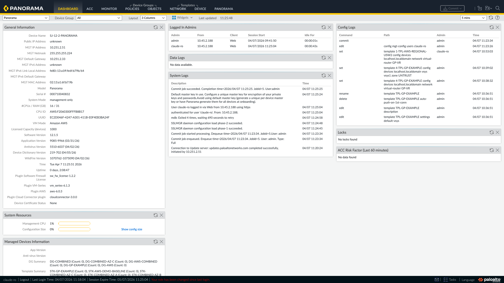
Do not enable management services (HTTP, HTTPS, SSH) on this interface. Management access should only be available on the dedicated management interface.
- Select the interface for internal access (e.g.,
ethernet1/2). - Configure:
- Interface Type: Layer3
- Zone: Select or create a
trustzone - IPv4 Address: Assign the internal IP address
- Click OK.
The tunnel interface terminates VPN connections from GlobalProtect clients.
- Navigate to Network > Interfaces > Tunnel.
- Click Add to create a new tunnel interface (e.g.,
tunnel.1). - Configure:
- Interface Number:
1 - Zone: Create a new zone named
vpn-zone - IPv4 Address: Optionally assign an IP (e.g.,
10.31.32.1/24)
- Interface Number:
- Click OK.
Your screen should look like this:
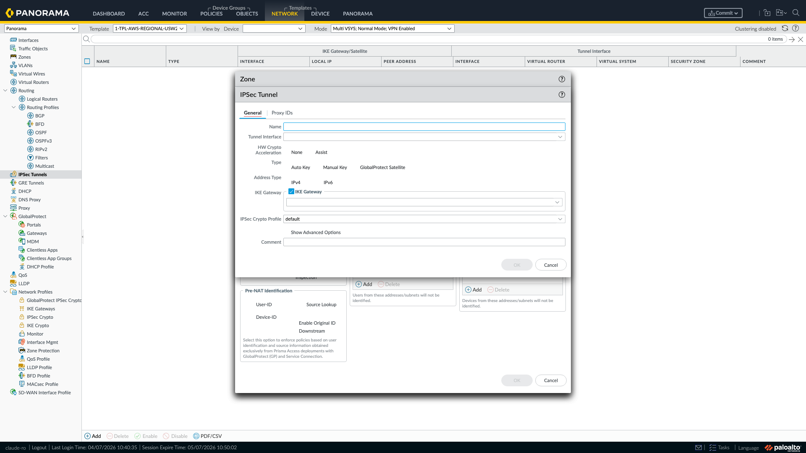
Enable User Identification on the VPN zone if you want User-ID-based policies for VPN traffic. Go to Network > Zones, select the VPN zone, and check Enable User Identification.
Allow traffic between the VPN zone and your internal zones.
- In Panorama, select your Device Group and navigate to Policies > Security.
- Create a rule:
- Name:
Allow-VPN-to-Trust - Source Zone:
vpn-zone - Destination Zone:
trust - Application:
any(tighten for production) - Action:
Allow
- Name:
- Position the rule appropriately in your rulebase.
Your screen should look like this:
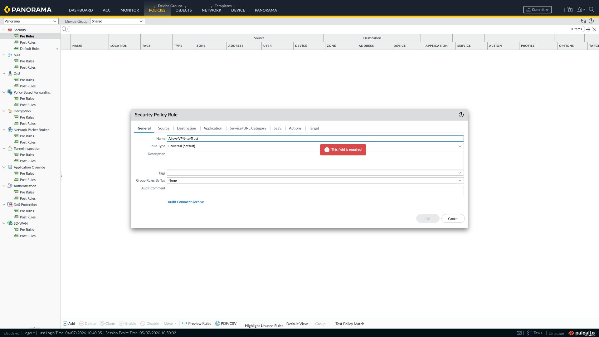
Starting with any/any for testing is acceptable, but tighten the rules before production deployment.
The portal and gateway require server certificates for SSL/TLS.
Option A: Certificate from a Public CA (Recommended)
Using a publicly trusted certificate prevents browser/app warnings for end users.
- Navigate to Device > Certificate Management > Certificates.
- Click Generate to create a CSR:
- Certificate Name:
gp-portal-cert - Common Name: Your portal FQDN (e.g.,
vpn.company.com)
- Certificate Name:
- Click Generate to create the CSR.
- Export the CSR and submit it to your CA.
- When you receive the signed certificate, click Import and upload the signed certificate, private key, and CA chain.
Option B: Self-Signed Root CA
Suitable for testing or when all endpoints have the CA certificate pre-installed.
- Navigate to Device > Certificate Management > Certificates.
- Click Generate to create a root CA:
- Certificate Name:
GP-Root-CA - Common Name:
GlobalProtect Root CA - Check Certificate Authority
- Certificate Name:
- Click Generate.
- Generate a server certificate signed by this CA:
- Certificate Name:
gp-server-cert - Common Name: Your portal/gateway FQDN
- Signed By: Select
GP-Root-CA - Add a SAN: DNS type with the FQDN, and optionally IP type
- Certificate Name:
- Click Generate.
Certificates list page:
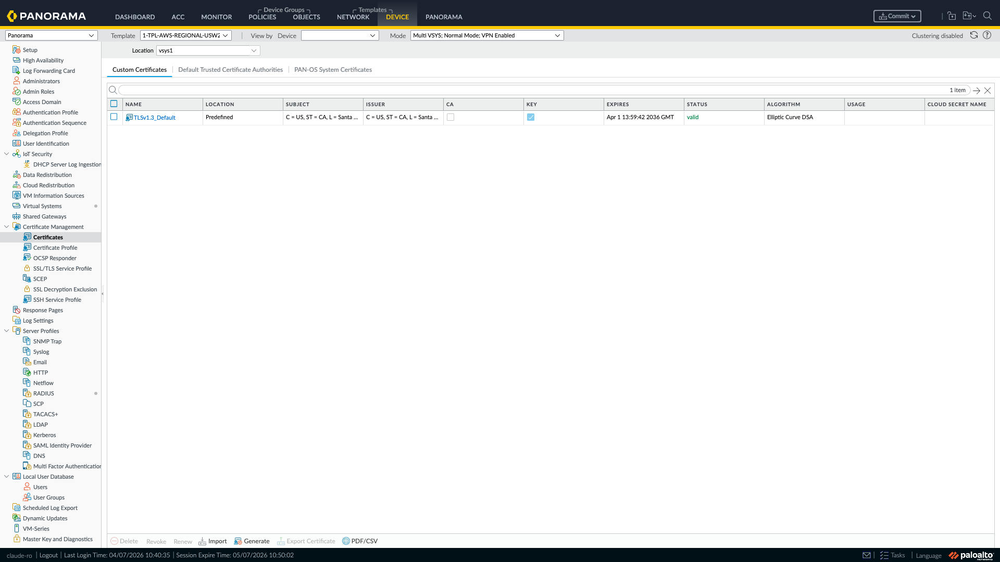
Generate Root CA certificate dialog:
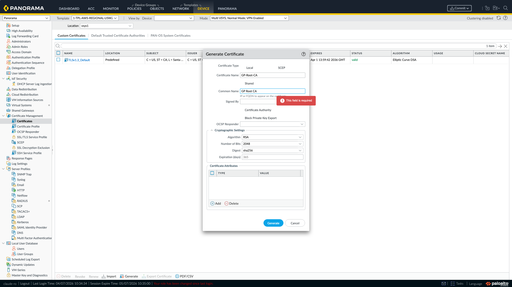
Generate server certificate dialog:
If using self-signed certificates, you must deploy the root CA certificate to all endpoints. Otherwise, users will see certificate warnings and the GlobalProtect app may fail to connect.
- Navigate to Device > Certificate Management > SSL/TLS Service Profile.
- Click Add:
- Name:
GP-SSL-Profile - Certificate: Select the server certificate from Step 1.5
- Min Version:
TLSv1.2 - Max Version:
TLSv1.3
- Name:
- Click OK.
Your screen should look like this:
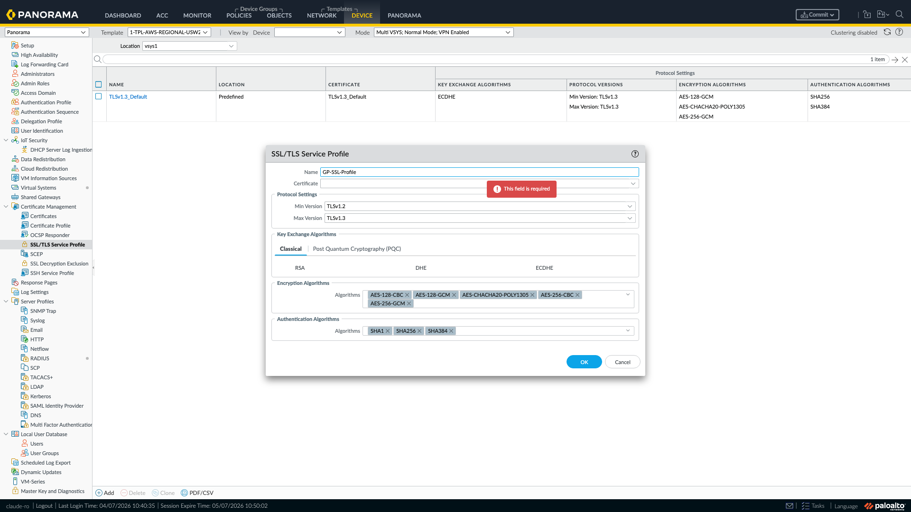
- Commit to Panorama, then Push to Devices.
- Verify on the firewall:
- Network > Interfaces — confirm interfaces are up (green)
- Network > Zones — confirm zones exist with correct interfaces
- Device > Certificate Management > Certificates — confirm certificates are present and valid
Your screen should look like this:
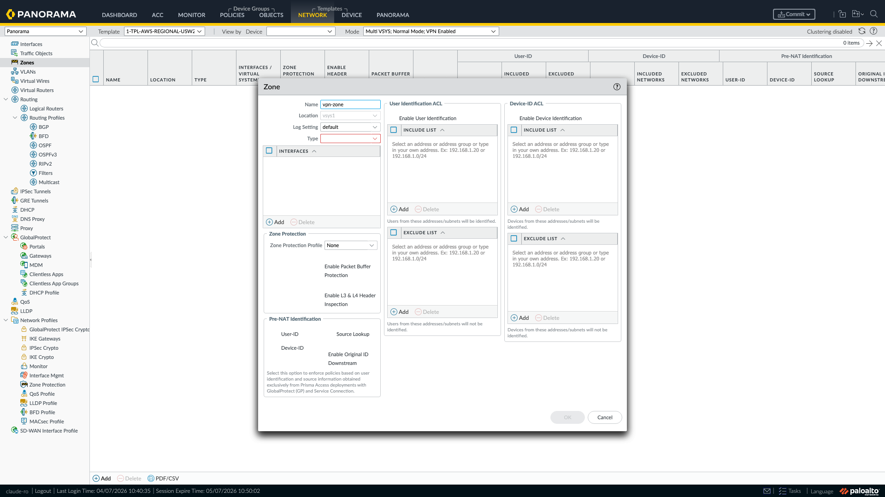
You should see green status indicators on all configured interfaces and valid certificates with correct expiration dates.
Section 2: Authentication
Configure how users authenticate to GlobalProtect. Choose one of the methods below.
| Method | Best For | Requirements |
|---|---|---|
| LDAP | Organizations with Active Directory | AD server reachable from firewall, service account |
| SAML | Cloud-first organizations, SSO | SAML 2.0 IdP (Okta, Azure AD, Ping, etc.) |
| RADIUS | Existing RADIUS infrastructure | RADIUS server, shared secret |
Step 2A.1: Create an LDAP Server Profile
- In Panorama, select your Template and navigate to Device > Server Profiles > LDAP.
- Click Add:
- Profile Name:
AD-LDAP-Profile - Server List: Click Add
- Name:
AD-Server-1 - LDAP Server: IP or FQDN of your AD server (e.g.,
10.0.1.10) - Port:
389(LDAP) or636(LDAPS — recommended)
- Name:
- Type:
active-directory - Base DN:
DC=company,DC=com - Bind DN:
CN=svc-globalprotect,OU=Service Accounts,DC=company,DC=com - Bind Password: Service account password
- SSL: Check if using port 636
- Profile Name:
- Click OK.
Your screen should look like this:
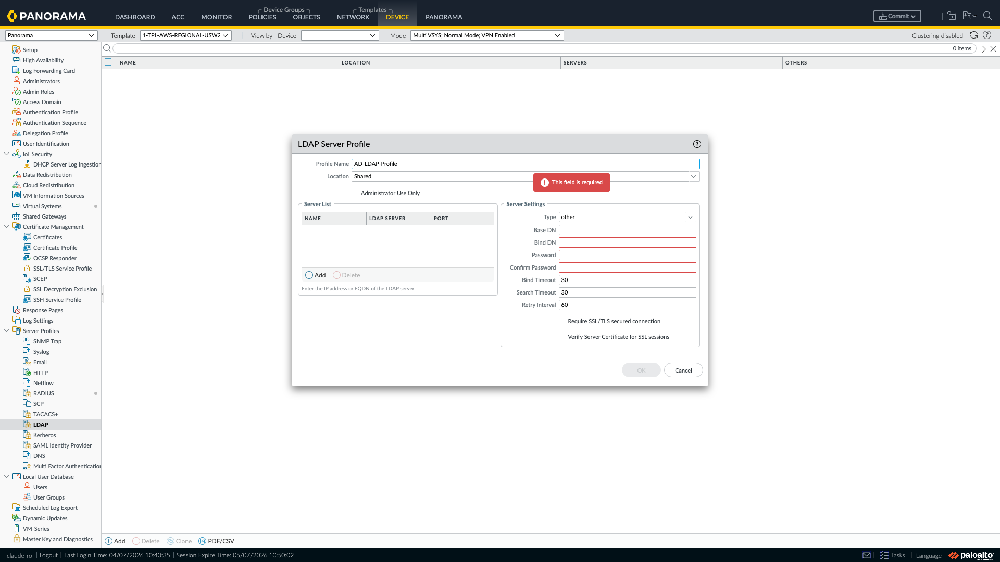
Use LDAPS (port 636) in production. Import the AD server's CA certificate under Device > Certificate Management > Certificates.
Step 2A.2: Create an Authentication Profile
- Navigate to Device > Authentication Profile.
- Click Add:
- Name:
GP-Auth-Profile - Type:
LDAP - Server Profile: Select
AD-LDAP-Profile - Login Attribute:
sAMAccountName - User Domain:
company
- Name:
- On the Advanced tab, set Allow List to
allfor testing. - Click OK.
Your screen should look like this:
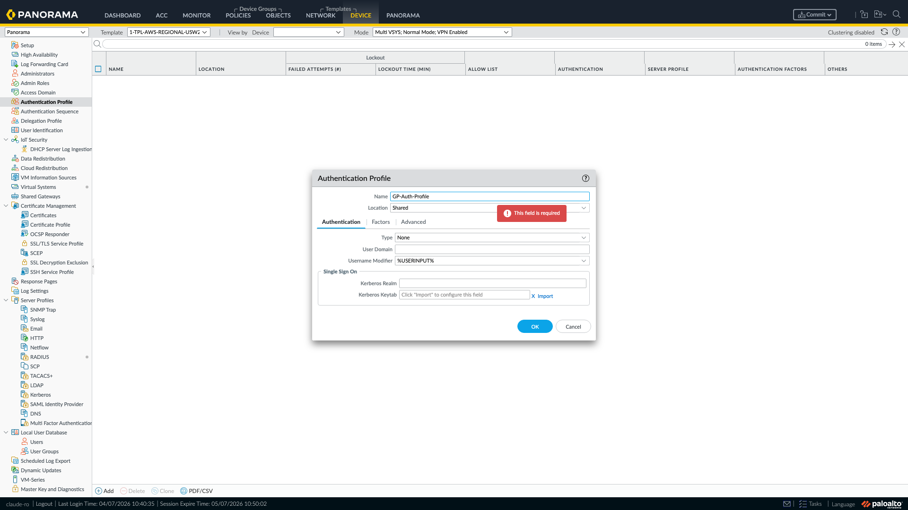
Step 2A.3: Enable Group Mapping (Optional)
- Navigate to Device > User Identification > Group Mapping Settings.
- Click Add:
- Name:
AD-Group-Mapping - Server Profile: Select
AD-LDAP-Profile - Domain:
company
- Name:
- On the Group Include List tab, add the groups you want to use in policies.
- Click OK.
Your screen should look like this:
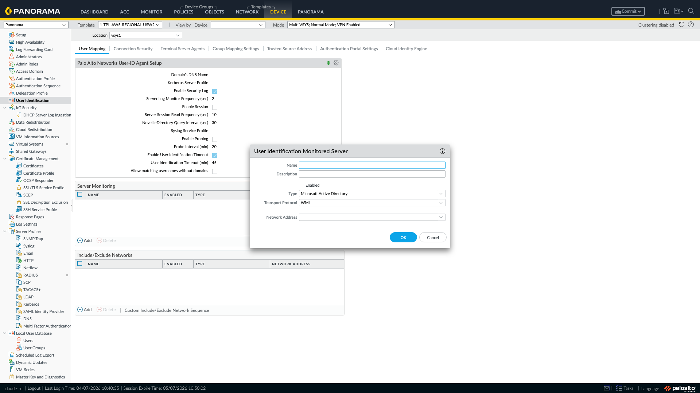
Step 2B.1: Configure Your Identity Provider
On your IdP (Okta, Azure AD, etc.), create a new SAML application with these settings:
| Setting | Value |
|---|---|
| ACS URL | https://vpn.company.com:443/SAML20/SP/ACS |
| Entity ID | https://vpn.company.com:443/SAML20/SP |
| Name ID Format | Email or username |
Download the IdP Metadata XML file from your IdP.
Step 2B.2: Import IdP Metadata
- In Panorama, navigate to Device > Server Profiles > SAML Identity Provider.
- Click Import and upload the IdP metadata XML file.
- Verify the imported settings:
- Identity Provider ID: Auto-populated
- Identity Provider SSO URL: Auto-populated
- Identity Provider Certificate: Should be imported automatically
- Max Clock Skew:
60seconds
- Click OK.
Your screen should look like this:
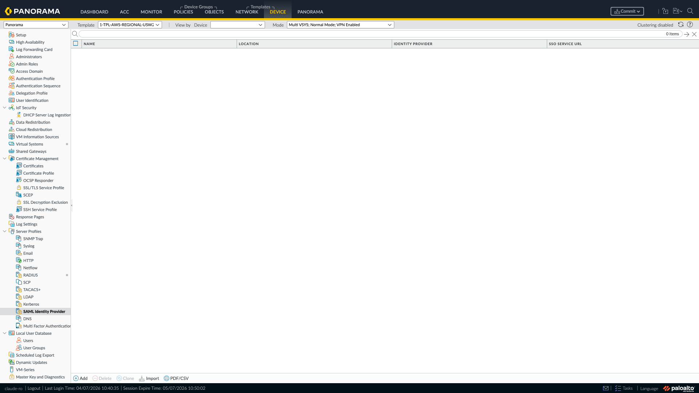
Step 2B.3: Create a SAML Authentication Profile
- Navigate to Device > Authentication Profile.
- Click Add:
- Name:
GP-SAML-Auth-Profile - Type:
SAML - IdP Server Profile: Select the imported profile
- Username Attribute: As configured on IdP
- User Group Attribute:
groups(if IdP sends group claims)
- Name:
- On the Advanced tab, set Allow List to
all. - Click OK.
- Commit to Panorama, then Push to Devices.
- Verify the server profile connectivity:
- For LDAP: Check connection status in Device > Server Profiles > LDAP
- For SAML: Verify IdP metadata is imported with valid certificate
The LDAP server profile should show a successful connection, or the SAML IdP metadata should display with all fields populated and a valid certificate.
Section 3: Gateway Configuration
The gateway establishes VPN tunnels with endpoints and enforces security policies on the tunneled traffic.
- In Panorama, select your Template and navigate to Network > GlobalProtect > Gateways.
- Click Add.
- On the General tab:
- Name:
GP-External-Gateway - Interface: Select
ethernet1/1 - IPv4 Address: Select the IP on that interface
- SSL/TLS Service Profile: Select
GP-SSL-Profile
- Name:
Your screen should look like this:
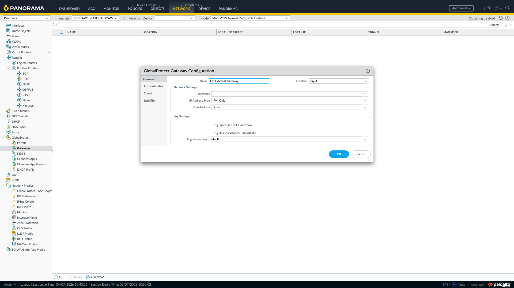
- On the Authentication tab, click Add under Client Authentication:
- Name:
default-auth - OS:
Any - Authentication Profile: Select your auth profile
- Name:
- Click OK.
Your screen should look like this:
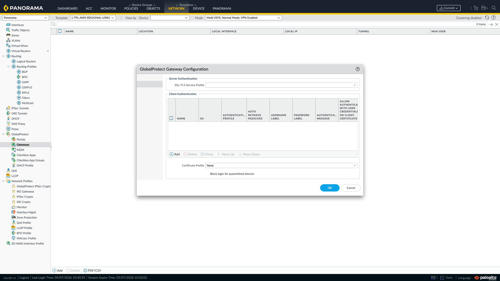
- On the Agent tab, select Tunnel Settings:
- Check Tunnel Mode
- Tunnel Interface: Select
tunnel.1 - Max Users: Set based on your license (0 = unlimited)
- Check Enable IPSec (recommended)
- Under Timeout Settings:
- Login Lifetime:
30days - Inactivity Logout:
3hours
- Login Lifetime:
Your screen should look like this:
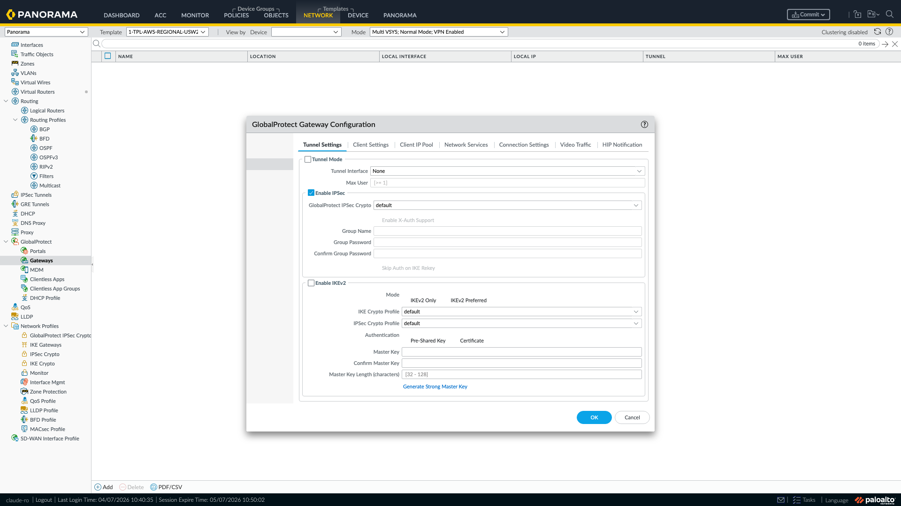
- On the Agent tab, under Tunnel Settings > Network Settings:
- IP Pool: Click Add — e.g.,
10.31.32.2-10.31.32.254 - DNS Server: Add internal DNS (e.g.,
10.0.1.10) - DNS Suffix:
company.com - Access Route: Add internal networks (e.g.,
10.0.0.0/8) or leave empty for full tunnel
- IP Pool: Click Add — e.g.,
- Click OK to save the gateway configuration.
If you add specific access routes, only traffic destined for those networks goes through the VPN (split tunnel). If you leave access routes empty, all traffic routes through the VPN (full tunnel). Split tunnel reduces bandwidth; full tunnel provides more security.
For application or domain-based split tunneling:
- Navigate back to the gateway's Agent tab.
- Under Client Settings, click Add:
- Name:
default-config
- Name:
- On the Split Tunnel tab:
- Include: Networks that should go through the VPN
- Exclude: Networks that should bypass the VPN
- Domain and Application: Optionally exclude specific domains or applications
See: Split Tunnel Traffic on GlobalProtect Gateways
Your screen should look like this:
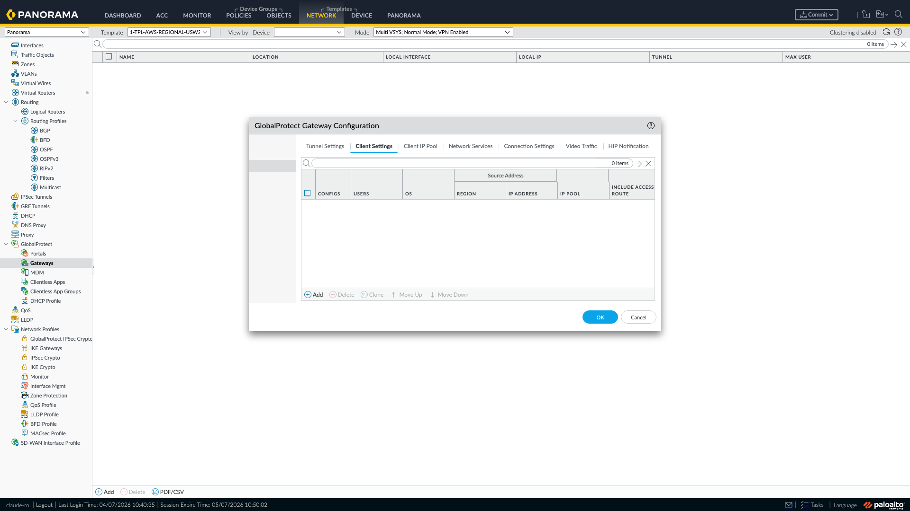
- Commit to Panorama, then Push to Devices.
- Verify on the firewall:
- Navigate to Network > GlobalProtect > Gateways
- The gateway should show a green status indicator
- From the firewall CLI:
show global-protect-gateway name GP-External-GatewayThe gateway status should show as Running with the correct interface, IP, and tunnel configuration.
Section 4: Portal Configuration
The portal is the entry point for GlobalProtect. It authenticates users and delivers the gateway list and app configuration to endpoints.
Set Up Access to the Portal | Client Auth Configurations | App Configurations
- In Panorama, navigate to Network > GlobalProtect > Portals.
- Click Add.
- On the General tab:
- Name:
GP-Portal - Interface: Select
ethernet1/1(same as gateway) - IPv4 Address: Select the same IP as the gateway
- SSL/TLS Service Profile: Select
GP-SSL-Profile
- Name:
Your screen should look like this:
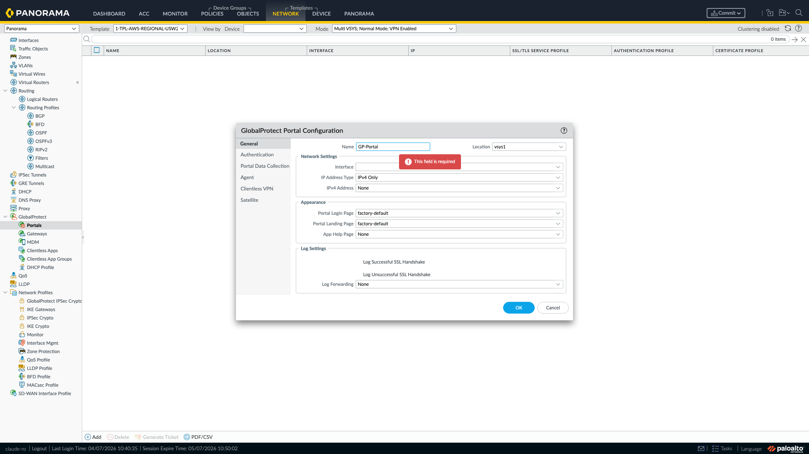
The portal and gateway typically share the same interface and IP address. GlobalProtect differentiates between portal and gateway connections automatically.
- On the Authentication tab, click Add:
- Name:
default-portal-auth - OS:
Any - Authentication Profile: Select the same profile used for the gateway
- Name:
- Click OK.
Your screen should look like this:
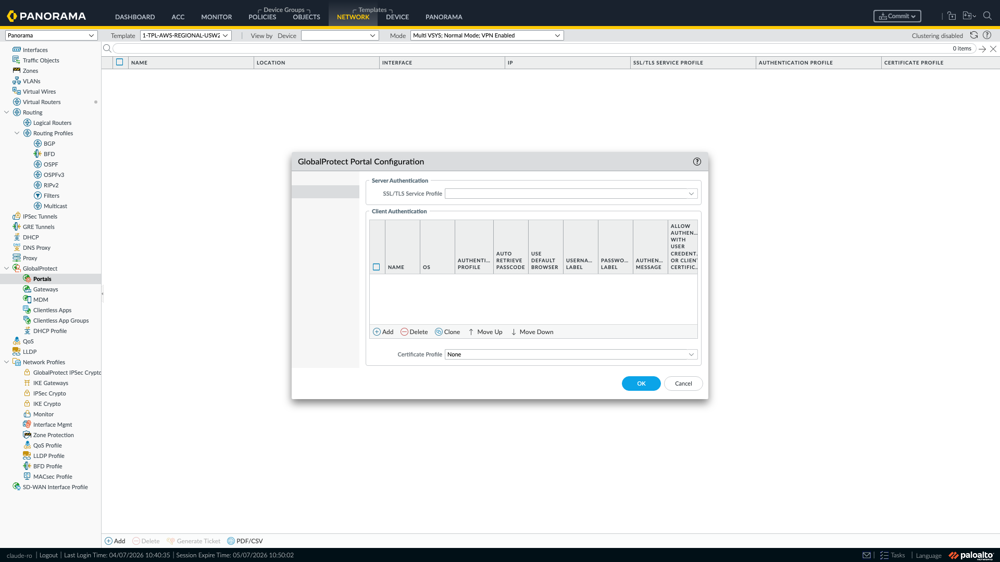
Define what the GlobalProtect app does after connecting to the portal.
- On the Agent tab, click Add:
- Name:
default-agent-config
- Name:
- On the Authentication tab:
- Save User Credentials:
Save Username and Password - Authentication Override:
- Check Generate cookie for authentication override
- Check Accept cookie for authentication override
- Cookie Lifetime:
24hours
- Save User Credentials:
- On the Config Selection Criteria tab:
- OS:
Any - User/User Group:
Any
- OS:
Your screen should look like this:
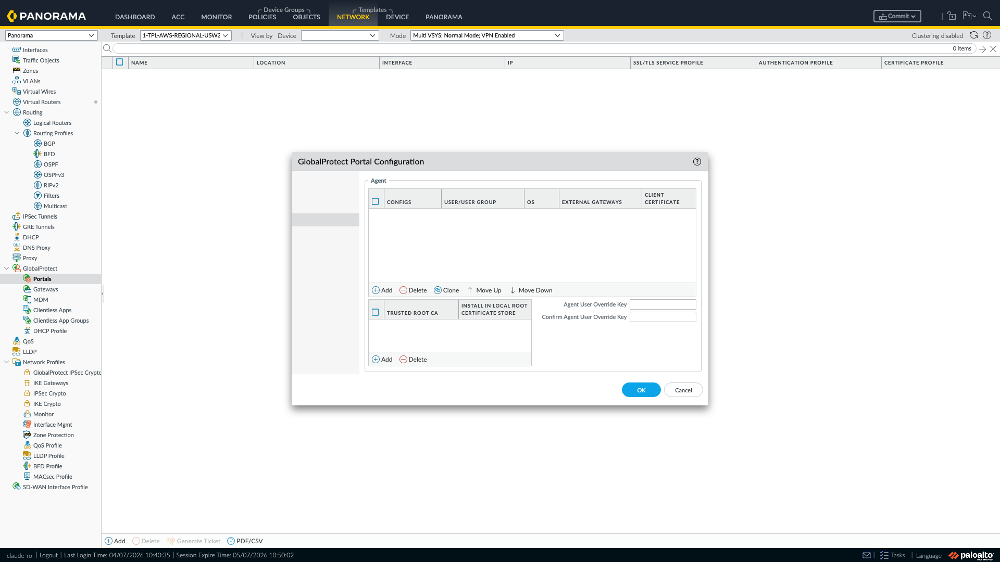
- In the agent configuration, go to the External tab under Gateways.
- Click Add:
- Name:
GP-External-Gateway - Address: Your gateway FQDN (e.g.,
vpn.company.com) - Priority:
Highest
- Name:
- Click OK.
- On the App tab:
- Connect Method: Select one:
Pre-logon then On-Demand— connects before user loginUser-Logon (Always On)— connects at login, stays connectedOn-Demand— user manually initiates
- Disable GlobalProtect App:
No - Allow user to change portal address:
No
- Connect Method: Select one:
- Click OK to close the agent configuration.
- Click OK to save the portal.
For most enterprise deployments, User-Logon (Always On) is recommended. It ensures VPN is always active when the user is logged in.
- Commit to Panorama, then Push to Devices.
- Verify on the firewall:
- Navigate to Network > GlobalProtect > Portals
- The portal should show a green status indicator
- Test portal access by navigating to
https://vpn.company.comin a browser.
The portal login page loads without certificate errors (if using a public CA) and accepts your credentials. After login, the download page displays the GlobalProtect app for your OS.
Section 5: App Deployment and Testing
Deploy the GlobalProtect app to endpoints and verify end-to-end connectivity.
From the Portal (Simplest)
- Navigate to
https://vpn.company.comin a browser. - Log in with your credentials.
- Download the appropriate installer for your OS.
From Palo Alto Networks Support Portal
- Log in to support.paloaltonetworks.com.
- Navigate to Updates > GlobalProtect App.
- Download the installer matching your PAN-OS version.
Host on Portal for Automatic Download
- In Panorama, navigate to Device > GlobalProtect Client.
- Click Download next to the desired version.
- After download, click Activate to make it available on the portal.
Your screen should look like this:
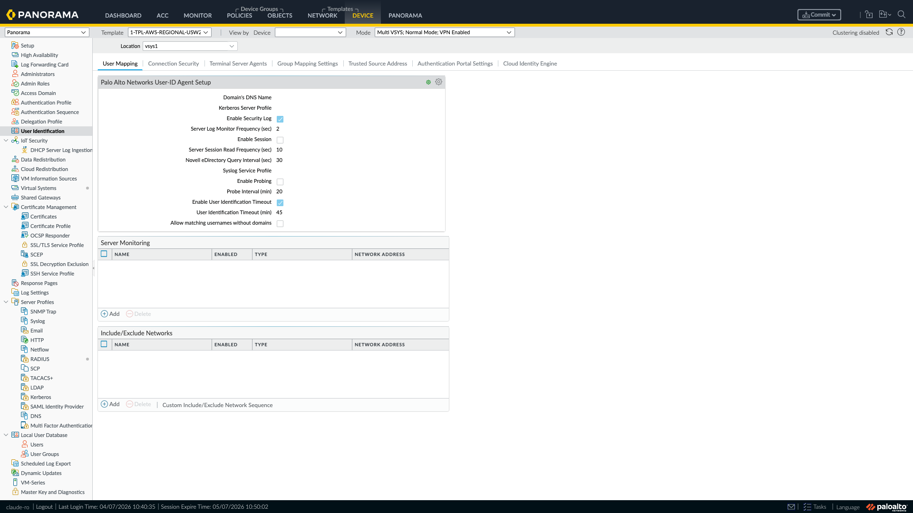
Windows
msiexec /i GlobalProtect64.msi /quiet PORTAL=vpn.company.commacOS
- Open the
.pkginstaller and follow the wizard. - Allow the system extension when prompted (System Preferences > Security & Privacy).
Linux
# Debian/Ubuntu
sudo dpkg -i GlobalProtect_UI_deb-*.deb
# RHEL/CentOS
sudo rpm -ivh GlobalProtect_UI_rpm-*.rpmOn macOS, users must approve the system extension for the VPN tunnel to work. This can be pre-approved via MDM profiles for managed deployments.
- Open the GlobalProtect app.
- Enter the portal address:
vpn.company.com - Enter your credentials (or authenticate via SAML redirect).
- The app should connect and show:
- Status: Connected
- Assigned IP: An IP from your gateway's IP pool
- Gateway: The name of the connected gateway
From the endpoint, test access to internal resources:
ping 10.0.1.10 # Internal server
nslookup server.company.com # DNS resolutionOn the firewall, verify the tunnel session:
show global-protect-gateway current-user gateway GP-External-GatewayThis should display the connected username, assigned virtual IP, client OS, app version, and connection duration.
Check traffic logs in Panorama: Monitor > Logs > Traffic, filter for source zone vpn-zone.
The GlobalProtect app connects without errors, receives an IP from the configured pool, and can access internal resources. Traffic logs show the correct username, source zone (vpn-zone), and policy matches.
Troubleshooting
| Symptom | Likely Cause | Resolution |
|---|---|---|
| App cannot reach portal | DNS or firewall blocking | Verify DNS resolution and port 443 is open to portal IP |
| Certificate error | CN/SAN mismatch | Ensure certificate CN or SAN matches the portal FQDN |
| Authentication fails | Wrong auth profile or server unreachable | Check LDAP/SAML server profile connectivity |
| Connected but no access | Missing routes or policies | Verify access routes on gateway and security policies |
| Slow VPN performance | Full tunnel routing all traffic | Consider split tunnel for corporate-only traffic |
| Frequent disconnections | Timeout too short | Increase timeout values in gateway tunnel settings |
# Show gateway status
show global-protect-gateway name GP-External-Gateway
# Show connected users
show global-protect-gateway current-user gateway GP-External-Gateway
# Show portal status
show global-protect-portal name GP-Portal
# Show tunnel statistics
show global-protect-gateway statistics gateway GP-External-Gateway
# Debug gateway issues
debug global-protect-gateway log-level gateway GP-External-Gateway level debug
# Show certificate details
show certificate name gp-server-cert| Source | Location |
|---|---|
| Firewall System Logs | Monitor > Logs > System — filter for globalprotect |
| Firewall Auth Logs | Monitor > Logs > Authentication |
| Windows App Logs | C:\Program Files\Palo Alto Networks\GlobalProtect\PanGPS.log |
| macOS App Logs | /Library/Logs/PaloAltoNetworks/GlobalProtect/PanGPS.log |
| Linux App Logs | /opt/paloaltonetworks/globalprotect/PanGPS.log |
Quick Reference
| Parameter | Example Value | Where Used |
|---|---|---|
| Portal/Gateway FQDN | vpn.company.com | DNS, certificate CN/SAN, app config |
| External Interface | ethernet1/1 | Portal and gateway |
| Tunnel Interface | tunnel.1 | Gateway tunnel settings |
| VPN Zone | vpn-zone | Security policies |
| IP Pool | 10.31.32.2-10.31.32.254 | Gateway tunnel settings |
| DNS Servers | 10.0.1.10, 10.0.1.11 | Gateway network settings |
| SSL/TLS Profile | GP-SSL-Profile | Portal and gateway |
| Auth Profile | GP-Auth-Profile | Portal and gateway |
| Port | Protocol | Direction | Purpose |
|---|---|---|---|
| 443 | TCP | Inbound | Portal and gateway HTTPS |
| 4443 | TCP | Inbound | Gateway (alternate port) |
| 53 | UDP/TCP | Outbound | DNS resolution |
| 389/636 | TCP | Outbound | LDAP/LDAPS to AD |
| 443 | TCP | Outbound | SAML IdP communication |